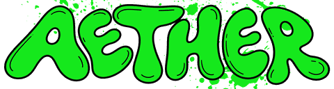

denyut jantung
--bpm
tidak ada sampel valid

Adaptive EnduranceAngka besar = rata-rata 60 detik terakhir (garis putus-putus di grafik mini). Tekan Tandai tepat saat kamu mulai berhenti mengayuh: yang tersimpan adalah rata-rata 60 detik sebelum tombol ditekan, bukan nilai sesudah HR turun. Baris HR terputus dan sensor kulit bermasalah dibuang otomatis.
Tempel di sheet “Data Kalman” mulai kolom A (Sesi, Waktu, HR, Tskin, Tambient, Tcore_referensi). Hanya titik yang sudah punya angka tympanic dan masih dicentang “ikut regresi” yang disalin. Titik menit 0 (istirahat) sebaiknya tidak ikut regresi — hilangkan centangnya. Kalau Excel-mu memakai koma sebagai desimal, pilih “koma”.